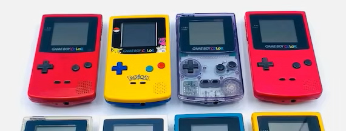

GAME BOY GAMES

La Game Boy es una videoconsola portátil de 8 bits de cuarta generación desarrollada y fabricada por Nintendo. Salió a la venta por primera vez en Japón el 21 de abril de 1989, en Norteamérica más tarde ese mismo año y en Europa a finales de 1990. Fue diseñada por el mismo equipo que desarrolló la serie Game & Watch de juegos electrónicos portátiles y varios juegos de Nintendo Entertainment System (NES): Satoru Okada, Gunpei Yokoi y Nintendo Research & Development.